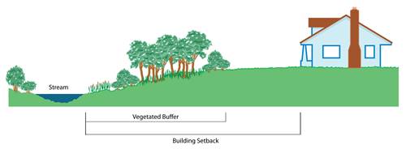

Conservation Ordinances
What is it?
Riparian conservation ordinances are an important tool for protecting riparian areas. Ordinances can be implemented by homeowner associations, cities, or counties and should be developed with the assistance of technical experts. Ordinances can include measures to preserve riparian buffers, prevent or limit developement, or outline mitigation to damaged riparian areas.

Riparian setback (diagram from Montana Audubon)
Conservation Benefits
- Maintains riparian connectivity
- Protects fish and wildlife habitat
- Provides natural flood control
- Promotes good land stewardship
What does it include?
Riparian conservation ordinances will vary by region and intended conservation goal. Technical experts should be consulted to fully assess biological, ecological, and hydrological processes for the watershed. Riparian ordinaces should maintain riparian connectivity, identify watershed appropriate buffer widths, and protect wildlife and fish dependant on riparian areas. Riparian setbacks can be a specific type of riparian ordinance.
Conservation Ordinance Links
- An ordinance creating a riparian buffer conservation zone (Borough of Jamesburg, New Jersey)
- Guidebook for riparian corridor conservation (Montgomery Co. Pennsylvania)
- Model ordinances for regulating wetlands; riparian habitats; stream buffers (Kusler)
- Model ordinances language (US EPA)
- Policies and ordinances for riparian habitat protection (Marin County, California)
- Riparian buffer conservation zone model ordinance (Passaic River & New Jersey Department of Environmnetal Protection)
- Riparian buffer with zoning (Pennsylvania State Association of Township Supervisors)
- Riparian & wetland setback model ordinance (Ohio)
- Stream buffer ordinances (Etowah Watershed, Georgia)
Conservation Ordinance Bibliography